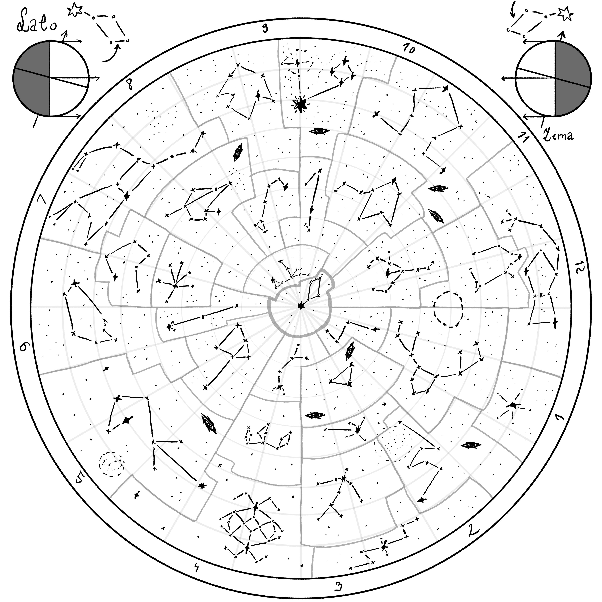

Opis i zastosowanie
Mapa nieba to rysunek, który przedstawia położenie gwiazd na niebie — służy jako przewodnik dla nawigatorów oraz podróżnych. Na temat znaczeń konstelacji wypowiem się w rozdziale o Astrologii, natomiast tutaj wytłumaczę, jak mniej więcej posługiwać się przedstawioną mapą.
Mapa Nieba
Na mapie można dostrzec pozycję gwiazdy polarnej w stosunku do pór roku oraz obrót jej ogonka. Gwiazdę polarną nazywa się również Orlą gwiazdą i jest częścią konstelacji Lutni. Przez jej jasność i idealną pozycję, łatwo użyć jej do nawigacji. Zaleca się do tego użycie Sekstantu lub Astrolabium, w zależności od sytuacji.
Jak używać mapy nieba?
- Zlokalizuj Orlą gwiazdę — najłatwiej po jej jasności; jej charakterystyczny ogon również pomoże w identyfikacji.
- Zmierzenie kąta elewacji — stań na stabilnym gruncie i trzymaj astrolabium pionowo. Skieruj alidadę na Orlą gwiazdę przez otwór lub przeziernik.
- Odczytaj kąt — z płytki astrolabium odczytaj wartość kąta elewacji.
Przykładowo: jeśli kąt elewacji wynosi 51°, oznacza to, że znajdujesz się na szerokości 51 stopni północnej. Inne gwiazdy można wykorzystać do ustalenia długości geograficznej.